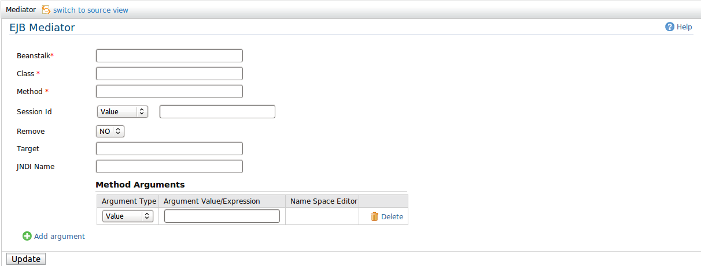

EJB mediator calls an external Enterprise JavaBean(EJB) and stores the result in the message payload or in a message context property. Currently, this mediator supports EJB3 Stateless Session Beans and Stateful Session Beans
Figure1: EJB Mediator figure 1
Following will describe the properties which required to configure EJB (under EJB 3.0 specification).
An enterprise beanstalk is used to retrieve Enterprise JavaBean (EJB) client stubs. This class supports stateless and stateful session beans. Enterprise beanstalks can be configured in synapse.properties file. Parameters of the JNDI service to be looked up for EJBs should be provided in that configuration. Enterprise beanstalks cache EJB client stubs to improve efficiency by omitting excessive JNDI look ups. Cache timeout for both stateless and stateful session beans could be configured separately
A class reprasants the client service stubs which can be statelss aor statefull beans (should be included at the runtime environment)
A piece of method which is registered at EJB session and going to invoke while execute at the synapse run time environemnt
Session id of the stateful session bean, null for stateless session beans.
Whether or not this bean is removed from the beanstalk after the method invocation.
Target to store the result of the EJB method call.
JNDI name of the bean. Could be null if this bean is already cached in the beanstalk.
Argument list for the remote method invocation.